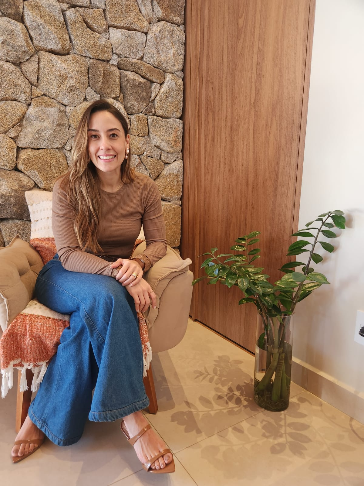
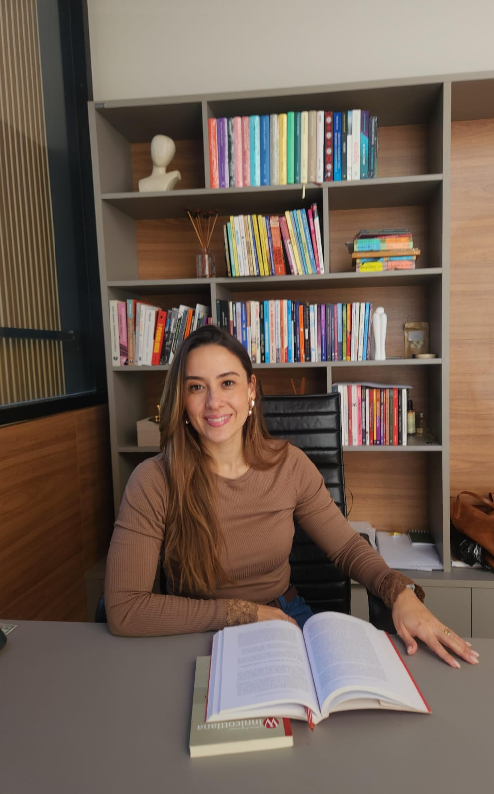

Um espaço para você
se encontrar de novo,
com calma.
Psicanálise para quem deseja mergulhar em si mesmo e compreender, com profundidade e acolhimento, aquilo que ainda pesa em silêncio.
- Escuta sigilosa, sem julgamentos
- Online para todo o Brasil
- Presencial em Sorocaba
Existe algo dentro de você
que ainda não encontrou palavras
Muitas vezes carregamos sensações difíceis de explicar, mesmo para nós mesmos. Dar nome ao que se sente é o início de um cuidado verdadeiro.
-
I
Mente acelerada
Pensamentos que não descansam, um alerta constante e a sensação de nunca estar realmente presente no momento.
-
II
Laços que pesam
Vínculos que se repetem sempre do mesmo jeito, mesmo quando você promete a si mesmo que seria diferente.
-
III
Sensação de vazio
Dias que se cumprem por obrigação, sem saber muito bem onde você mesmo(a) está no meio dessa rotina.
-
IV
Esgotamento silencioso
O peso de cuidar de tudo e de todos, e o desejo, quase secreto, de finalmente ser cuidado(a).
-
V
Mudanças que assustam
Novos capítulos da vida que trazem dúvidas, medos, e a necessidade de se reencontrar em meio a tudo isso.
-
VI
Silêncio que dói
Sentimentos grandes demais para as palavras, e o medo de que, ao serem ditos, sejam julgados.
Elaborar em palavras é o primeiro passo da cura
Não existem fórmulas prontas nem respostas de manual. Existe, sim, um espaço de escuta verdadeira, onde aquilo que hoje parece confuso pode, pouco a pouco, fazer sentido.
Aquilo que evitamos sentir insiste em voltar. Escutar a si mesmo é o começo de toda transformação.
Um espaço para se abrir
Sem roteiros nem pressa — cada sessão respeita o tempo que a sua história pede.
Um olhar atento aos padrões
Na escuta compartilhada, repetições que pareciam invisíveis começam a fazer sentido.
Mais leveza para escolher
Com mais clareza interna, as decisões deixam de ser automáticas — e passam a ser suas.

Um cuidado que nasce de
escuta, respeito e presença
Procurar ajuda é, antes de tudo, um gesto de cuidado consigo mesmo. Por isso, ofereço um espaço onde você pode se abrir sem pressa, sem julgamentos e com a certeza de que tudo o que for dito aqui permanece em sigilo absoluto.
Cada pessoa chega com sua própria história — feita de conquistas, perdas e perguntas ainda sem resposta. Meu papel não é entregar soluções prontas, mas caminhar ao seu lado enquanto você redescobre, no seu próprio ritmo, o que já existe dentro de você.
Conheça um pouco da minha história →O que ficou depois
da escuta
Aqui encontrei liberdade para falar sem medo de julgamento — e isso, sozinho, já foi transformador para a minha ansiedade.
M.F. — Sorocaba
Fazer terapia online não diminuiu em nada a profundidade do processo. Sinto o mesmo cuidado como se estivéssemos na mesma sala.
R.T. — Votorantim
Entendi, enfim, por que repetia os mesmos padrões nos meus relacionamentos. Foi como acender uma luz que eu não sabia que precisava.
L.S. — Itu
Perguntas que talvez
estejam com você
IPsicanálise e psicologia são a mesma coisa?
Não. A psicanálise é uma abordagem própria, que busca compreender o inconsciente e os sentidos ocultos por trás dos nossos sentimentos e repetições — indo além do que está na superfície.
IIA terapia online é tão profunda quanto a presencial?
Sim. O vínculo terapêutico se constrói pela escuta e pela presença, não pelo espaço físico. Muitos pacientes relatam se sentir até mais confortáveis em um ambiente familiar.
IIIQuanto tempo leva até eu sentir alguma diferença?
Cada processo tem seu próprio tempo. Alguns sentem alívio já nas primeiras conversas; outros preferem um acompanhamento mais longo. Conversamos sobre isso desde o primeiro encontro.
IVComo é o primeiro contato?
É uma conversa tranquila, sem compromisso, só para nos conhecermos e entendermos, juntos, se faz sentido seguirmos adiante.
Você não precisa
carregar isso sozinho(a).
Escolha o canal que for mais confortável para você. Respondo pessoalmente, com cuidado e sem pressa, em até 24h úteis.
Falar no WhatsApp